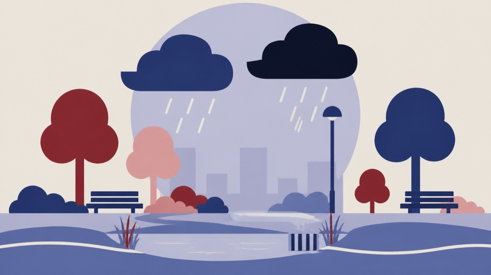

På dagsordenen 2. december, Klima, Miljø og Planudvalget, Sorø
Godkendelse af Klimaplan 2027

Kort fortalt
- Hvem
- Klima, Miljø og Planudvalget, Sorø Kommune
- Hvornår
- Onsdag 2. december 2026
- Status
- På dagsordenen. Sagen behandles på mødet.
Er noget forkert her? Skriv til os
Hvad kan du gøre?
Læs hele sagen Kommunens egen tekst
Indstilling
ADMINISTRATIONEN INDSTILLER, AT
1. Hvidbogen tages til efterretning.
2. De forslag til ændringer til Klimaplan 2027, der fremgår af hvidbogens side 20, bilag
1, godkendt, med henblik på efterfølgende indarbejdelse i klimaplanen.
3. CONCITOs og C40s certificering af Klimaplan 2027 for Sorø Kommune, tages til
efterretning.
4. Klimaplan 2027 godkendes.
Beskrivelse af sagen
Baggrund og historik
Kommunalbestyrelsen vedtog d. 22. juni 2022 den første DK2020-klimaplan for Sorø
Kommune. Heri fremgår det, at Sorø Kommune forpligter sig til at revidere klimaplanen i 2026.
Forslag til en revideret Klimaplan 2027 for Sorø Kommune har været i offentlig høring i
perioden 21. september til 18. oktober 2026.
Metoden, der har været anvendt til at udarbejde og revidere klimaplanen, er den samme, som
anvendes i landets øvrige kommuner.
Klimaplanen bliver kvalitetssikret gennem Klimaalliancen, som er et samarbejde mellem
danske kommuner, KL og Realdania med CONCITO som videnspartner. CONCITO og C40
forestår certificeringen af klimaplanen. Formålet er at sikre, at kommunernes klimaplaner
understøtter målene i Parisaftalen om at begrænse klimaforandringerne.
CONCITO er en grøn og uafhængig tænketank, der arbejder for at omsætte viden til konkret
klimahandling og dermed accelerere den grønne omstilling i Danmark og internationalt. C40 er
et verdensomspændende netværk af storbyer, der har forpligtet sig til at arbejde ambitiøst med
at mindske udslippet af drivhusgasser.
Hvidbog – behandling af de indkomne høringsbemærkninger.
Der er i alt indkommet 12 høringssvar.
De indkomne bemærkninger er gennemgået og kommenteret i den vedlagte hvidbog, ligesom
høringssvarene indgår i fuld ordlyd (bilag 1). Generelt vidner bemærkningerne om opbakning til
Klimaplan 2027.
Det foreslås, at der på baggrund af de indkomne bemærkninger foretages enkelte ændringer i
Klimaplan 2027. De konkrete ændringsforslag fremgår af hvidbogen side 20. Herunder er der
også enkelte ændringsforslag fra Fagcenter Teknik, Miljø og Drift.
Størstedelen af de indkomne bemærkninger giver ikke anledning til ændringer i Klimaplan
2027, da de enten allerede vurderes at være imødekommet i klimaplanforslaget, består af
forslag og input, som ikke nødvendiggør ændringer, eller ikke kan imødekommes.
Certificering af Klimaplan 2027
Bilag 2 indeholder CONCITOs og C40's certificering af Klimaplan 2027 for Sorø Kommune.
Aftalen og dermed certificeringen anses som gældende, når Klimaplan 2027 er godkendt af
kommunalbestyrelsen.
Det fremgår af certificeringen, at Sorø Kommune forpligter sig til at implementere klimaplanens
tiltag, sikre løbende monitorering, evaluering og læring af planens fremdrift samt at skabe
gennemsigtighed om indsatsen.
I forbindelse med certificeringen har CONCITO/C40 anbefalet, at enkelte uddrag fra bilagene,
der var vedlagt høringsudgaven, integreres i selve klimaplanen for at tydeliggøre planen (se
punkt 124 på kommunalbestyrelsesmødet den 16. september 2026). Dette omfatter særligt
klimatilpasning, forbrugsbaserede udledninger samt socialt, miljømæssigt og økonomisk
rimelig og retfærdig fordeling.
I bilag 3 er vedlagt forslag til Klimaplan 2027, hvor disse præciseringer er indarbejdet.
Målsætninger, temaer og tiltag i Klimaplan 2027
De reviderede overordnede målsætninger i Klimaplan 2027 for Sorø Kommune er følgende:
I 2030 skal den lokale CO2-udledning i Sorø Kommune være sat ned med 75 procent og
i 2035 med 85 procent. I 2045 skal Sorø Kommune være CO2-neutral.
Den overordnede målsætning for klimatilpasning er at øge Sorø Kommunes
klimarobusthed frem mod 2050 og dermed sikre, at vi passer bedst muligt på
kommunens borgere, bygninger, anlæg og faciliteter mv.
Temaerne i klimaplanen er:
1. Energi
2. Transport og mobilitet
3. Landbrug og arealanvendelse
4. Byggeri, ressourcer og affald
5. Kommunen som organisation
6. Klimahandling og undervisning i klima
7. Virksomheders grønne omstilling
8. Klimatilpasning
For at nå klimaplanens mål skal både kommunen, borgerne og virksomhederne arbejde for at
mindske CO2-udledningen og ruste kommunen til klimaforandringerne. Klimaplanen indeholder
derfor en lang række tiltag i forhold til vejen mod at blive en klimaneutral kommune i 2045 og at
øge kommunens klimarobusthed frem mod 2050. Selv med en realisering af alle de foreslåede
tiltag vil der i 2045 være et stykke til målsætningen om Sorø Kommune som en CO2-neutral
kommune. Derfor er klimaplanen ikke en statisk plan, men en dynamisk plan, der skal sikre, at
klimaplanens mål nås.
Klimaplanens fremdrift
Der fremlægges årligt en status på klimaplanens fremdrift, første gang i februar/marts 2028.
Økonomiske og andre væsentlige konsekvenser
Samlede økonomiske konsekvenser (1.000 kr.):
Klimatrappen rummer i 2027 1,400 mio. kr.
Lovgrundlag
Kommunale klimaplaner er ikke lovpligtige, men udspringer af klimaloven.
Høring
Forslag til Klimaplan 2027 har været fremlagt i offentlig høring i 4 uger, i perioden 21.
september til 18. oktober 2026.
Der er i alt indkommet 12 høringssvar.
De indkomne bemærkninger er gennemgået og kommenteret i den vedlagte hvidbog, ligesom
høringssvarene indgår i fuld ordlyd (bilag 1). Generelt vidner bemærkningerne om opbakning til
Klimaplan 2027.
Kilde: Sorø Kommune, Klima, Miljø og Planudvalget, dagsorden fra mødet onsdag 2. december 2026, punkt 2. Læs den originale sag hos kommunen.